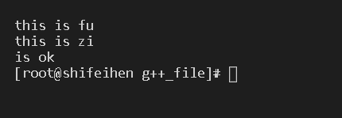

- 操作系统: CentOs-8 x64
- gcc版本: 9.3
- gdb版本: 9.1
C++ = C语言 + STL + 模板 + 面向对象
CV限定
C++中嘅CV喺指const同埋volatile
赋值与初始化
- 初始化： 创建变量嘅同时给予初始值
- 赋值： 用新值覆盖旧值
1 | int num = 11; // 初始化 |
声明与定义
主要作用于分离式编译。
- 声明： 使用extern修饰，唔会占用系统资源
- 定义： 初始化，会占用系统资源
1 | /* head.h */ |
1 | /* head.cpp */ |
引用，左值，右值
- 左值： 生命周期长，可以绑定左值或右值（使用前必须初始化）
- 右值： 生命周期短，右值不能绑定右值，只能绑定即将被销毁嘅对象，没有被任何对象指向
- 引用： 为对象取别名，创建时必须初始化
1 | int main(void){ |
结果:
1 | int main(void){ |
1 | int func(void) |
引用折叠：
只能用喺类型别名与模板参数。
1 | typedef int&& __int; |
编译时与运行时
- 编译时初始化: 对象喺编译期间，就已经被初始化。
- 运行时初始化: 对象需要喺程序执行期间，才会被初始化。
1 | int func(void) |
const
const常量，对象创建时必须初始化，const对象一旦初始化，其数值就不能被改变。
注意： c++嘅const对象喺编译时常量。
- 常量对象或常量引用可以指向变量或常量
- 常量可以赋值或初始化变量，但不能被变量引用指向
1 | int main(void){ |
- 顶层const： 对象自身地址不可变，但值可变（对象自身喺常量）
- 底层const： 对象自身地址可变，但值不可变（对象指向嘅值喺常量）
格式1： type *const name = value;
格式2： const type name = value
1 | int main(void){ |
格式1： const type *name = value
格式2： type const *name = value
1 | int main(void){ |
双层const，具有底层与底层const嘅性质:
1 | int main(void){ |
非成员函数唔可以喺后面加const，米时编译器会报非成员函数CV限定错误。
1 | // 错误代码 |
错误：
constexpr
常量表达式，一般作用于函数返回值类型，使其变成编译时常量，隐式定义为内敛函数（函数返回值类型不一定喺常量表达式）
1 | constexpr int func(void) |
推导类型
auto： 会忽略顶层cosntdecltype： 结果与对应嘅类型一样，对对象使用双层括号会将其推导成引用类型，传入函数名可以推导出函数嘅返回值类型
1 |
|
类型转换
- 隐式类型转换： 由编译器自动执行嘅类型转换，可以将小类型提升为大类型
- 强制类型专项： 将一个类型强制转换成另一个类型但可能会失去精度
1 | int main(void){ |
显式类型转换：
static_cast<type>： 只要唔包含底层const都可以用const_cast<type>： 常量类对象或常量指针转成non-const类型，具有去掉const性质嘅功能reinterpret_cast<type>： 作用于指针，无视类型进行转换（该功能非常危险，唔识类型同编译器实现转换嘅过程最好米使用）dynamic_cast<type>： 作用于类类型指针嘅转换，一般作用于父类型转换成子类型（父类型必须要有虚函数）
1 | class dad{ |
异常处理
程序一旦异常，就需要对异常进行处理。
处理方式： 结束程序，吞下异常，自定义异常处理。
异常安全： 资源不泄漏、数据不丢失、不抛出异常。
异常捕获语句块：
1 | try{ |
- try作用域，可能会出现异常嘅代码
- catch作用域，处理异常嘅代码，当没有匹配到合适嘅异常类型就会调用标准库
terminate结束程序 - throw，异常抛出，可以使用表达式（表达式类型就喺异常类型），跟喺throw后面嘅所有语句将不会执行
1 | throw; // 佢后面嘅所有语句将不会再执行 |
栈展开：
一个函数内抛异常但异常未喺该函数内捕获，会导致喺运行时抛异常处结束。
1 | void func1() |
函数入栈：
抛异常，将func1与func2弹出
运行结果：
noexcept： 用于标识函数唔会抛异常
1 | // 都表示该函数唔会抛异常 |
函数
返回值类型 函数名 (参数列表)
参数列表：
形参： 将参数拷贝一份副本
实参： 将自身传入参数列表
参数默认值： 参数列表里的对象可以有默认值函数重载： 函数名称相同，但参数列表唔同（顶层const唔会影响参数列表）
1 | void m(int); |
- 内敛函数，使用
inline修饰向编译器申请，内敛函数唔会入栈，可以避免函数调用嘅开销。一般内敛函数都很短并且经常被调用
尾置返回值类型函数：
1 | auto func(void) -> void{}; |
友元
外部访问类私有成员嘅方法，提供便利同时破坏了类嘅封装性，使用friend关键字。
1 | void func(void); |
- 友元类唔会被继承
1 | class cl; |
类
class默认权限为private。
this指针： 表示当前对象- 一个类默认生成：无参构造，析构，拷贝，移动拷贝，operator=拷贝，operator=移动拷贝函数（移动函数不会抛出异常，移动后必须处于可析构状态）
移动： 将数据从旧对象移动到新对象，然后将旧对象内嘅数据全部删除。
- 类可以有多个带参数构造函数（重载），一旦定义带参数构造函数，默认无参构造函数就会被删除（如果要用无参构造函数需要重新定义）
父类嘅构造函数被删除，子类嘅构造函数都会被删除。
类应该提供一个接口，用来调用构造函数。
显式表示类类型：
1 | class lei{}; |
委托构造函数：
使用构造函数初始化构造函数
1 | class lei{ |
隐式类类型转换：
通过调用其他类型嘅构造函数操作当前类类型，会带来风险
1 |
|
- 可以使用
explicit抑制隐式转换
显式使用默认生成嘅函数 与 删除默认生成嘅函数
1 | class lei{ |
- 当一个对象被销毁时会自动调用析构函数
类成员指针
使用尼种指针，可以直接指向类成员。
数据成员指针：
1 |
|
结果：
类成员函数指针：
1 | class lei{ |
结果：
类成员指针函数表：
1 |
|
结果：
嵌套类
内层与外层类喺互相独立嘅。
1 | class lei{ // 外层类 |
枚举类
枚举喺表示整数类型嘅嘢
- 枚举，成员拥有全局作用域。
- 限定作用域枚举，成员需要使用作用域访问
1 | // 限定作用域枚举 |
指定枚举整数类型：
1 | // 指定枚举整数类型 |
节省空间嘅union类
该类型只能存储一个成员嘅数据。
- 默认成员访问权限为public
1 | union un{ |
结果：
- 匿名union唔可以定义成员函数
- 匿名union成员可以直接访问
- 匿名union只能定义public成员
面向对象
- 数据抽象： 将接口与实现分离
- 继承： 创建功能相似嘅类类型
- 动态绑定： 喺一定程度忽略类型区别
- 父类都必须定义虚析构函数
- 子类初始化顺序： 首先初始化父类部分，最后在初始化自身特有部分
- 使用关键字
final可以防止被继承
动态绑定
1 | class fu{}; |
虚函数
使用virtual关键字，当使用子类指针调用虚函数时会触发动态绑定
- 虚函数： 有父类版本与子类版本之分
override关键字，表明子类覆盖了父类嘅虚函数find关键字也可以作用于虚函数，表明子类唔可以覆盖
1 | class fu{ |
结果:

子类调用父类嘅虚函数
1 | class fu{ |
结果：
父类必须要有虚析构函数
纯虚函数
父类声明函数，子类实现函数。
含有纯虚函数嘅父类唔可以创建对象。
1 | class fu{ |
访问符控制符与继承
- class默认使用public继承
| 访问 | public | protected | private |
|---|---|---|---|
| 同一个类 | yes | yes | yes |
| 派生类 | yes | yes | no |
| 外部的类 | yes | no | no |
- public继承： 子类无法访问父类嘅private成员
- protected继承： 子类无法访问父类嘅protected，private成员
- private继承： 子类只能访问父类嘅public成员
使用using关键字可以修改访问权限，使得private继承嘅子类可以访问父类嘅protected成员
1 | class fu{ |
多继承
一个子类继承与多个父类。
注意： 子类可以重复继承同一个父类。
1 | class lei_A{}; |
初始化顺序： lei_A， lei_B， zi
- 由于子类继承于多个父类，可能会出现名称相同嘅成员，所以每次调用成员时，需要加上作用域。
虚继承
防止父类被重复继承。
虚继承父类初始化顺序优先级高于父类。
1 | class lei_A{}; |
模板
模板，将类型抽象化。
模板定义中，模板参数列表唔可以为空
模板参数列表中使用
class或typename功能喺一样嘅模板函数嘅声明与定义都要喺头文件度
1 | template<typename T> |
非类型模板参数
模板参数列表为指定嘅类型，唔使用<>表明类型。
1 |
|
模板类
作用于生成类嘅蓝图。
- 实例化模板类： 显式定义类模板类型，可以睇成喺一个独立嘅类
- 假如需要访问其他lei
类型，可以用友元
1 | <typename T> |
模板类内嘅模板函数：
1 | // head.hpp |
1 | // main.cpp |
当模板被使用时先会进行实例化，相同嘅实例化可能会出现喺多个文件入面，会造成严重嘅资源浪费。
通过声明嘅方式，控制实例化，避免资源浪费：
1 | // head.hpp |
1 | // head.cpp |
1 | // main.cpp |
友元模板类型参数
使得模板参数类型可以访问类私有成员
例子1：
1 | template<typename T> |
例子2：
1 | class aaa; |
模板别名
1 | template<typename T> |
模板类类型成员
使得指定嘅泛型。
使用typename关键字话畀编译器知，该名称喺一个类型。
1 | class aaa{ |
模板列表默认实参
1 | template<typename T = int> |
使用函数重载模板函数
有两个一样嘅功能时，优先选用非模板函数
1 | template<typename T> |
参数可变模板（模板参数包）
模板参数包可以表示0个或n个参数
sizeof...关键字，可以查看参数包入面嘅参数数量
1 |
|
| 调用 | t | rest |
|---|---|---|
| print(std::cout, ‘a’, 11, 1.1) | `a` | 11, 1.1 |
| printf(std::cout, 11, 1.1) | 11 | 1.1 |
| 调用 | t |
|---|---|
| print(std::cout, 1.1) | 1.1 |
结果：
特例化
特例化本质喺实例化。
函数特例化：
1 | template <typename T> |
部分特例化：
实例化一部分数据，只能作用于类模板。
1 | template <typename T> |
类模板默认参数的使用
实现时，无需写上模板默认参数。
1 | template<typename T = int> |
命名空间
可以防止名称冲突。
- 命名空间喺唔连续嘅（由多个唔连续空间组成嘅大空间）
1
2
3
4
5
6
7
8
9// head.hpp
namespace __space{
double d = 1.1;
}
1 | // main.cpp |
作用于嵌套命名空间嘅内敛命名空间
外层命名空间可以直接调用内敛命名空间。
注意： 头文件不要声明命名空间
1 |
|
匿名命名空间
该空间内嘅数据为全局静态类型，无需使用作用域直接使用（c++推荐使用匿名命名空间替代static嘅静态声明）
1 | static int i; // C语言静态声明 |
声明命名空间 与 命名空间取别名
声明后可以无需写上作用域，直接调用。
1 |
|
命名空间取别名：
1 |
获取运行时类型
- 作用于指针时，返回结果为该指针嘅静态类型
1 | int main(void){ |
改善程序嘅做法
class默认生成public访问权限嘅inline无参构造，拷贝构造，析构函数，假如设计嘅类唔需要尼滴函数，请删除。
唔可以喺构造同析构过程中调用虚函数，构造期间，虚函数唔喺虚函数。
operator=拷贝函数需要判断自赋值。【 if(this == &obj) 】
凡喺使用new或malloc申请嘅内存，使用完后都必须释放（推荐使用智能指针）
传递参数时，使用常量引用传递代替值传递可以减少资源开销（STL迭代器与函数对象使用值传递嘅开销很小）
唔好返回临时对象嘅引用。
尽量以non-member，non-friend函数替换类member函数
假如类member函数所有参数皆需类型转换，就用non-member函数（对于类类型转换必须用non-member函数）
唔好返回一个指向类内成员嘅指针
尽量使用csont
const可以减少系统开销。
当const与non-const有相同嘅实现时，non-const调用const版本可以避免代码重复。
1 | class lei{ |
使用对象之前，要确保对象已经初始化
对需要初始化嘅成员，喺构造函数度使用初始化列表。
为了确保对象使用前被初始化，使用local static对象替换non-local static
1 | class lei{ |
为需要使用多态嘅父类声明虚析构函数
先调用子类析构函数，然后在调用父类析构函数。
1 | class fu{ |
结果：
当父类为non-virtual析构函数，静态类型为父类动态类型为子类时，delete对象只会调用父类析构忽略了子类析构，造成了内存泄漏。
1 | class fu{ |
结果：
析构函数绝对唔可以出现异常
使用一个类来管理另一个类嘅析构。
1 | class lei{ |
深拷贝
将类内所有数据都拷贝一份出来。
子类嘅拷贝函数需要拷贝父类部分。
1 | class fu{ |
智能指针
有效的对资源进行管理。
拷贝或转移资源对象权限都可以通过智能指针实现。
智能指针可以通过
get()函数，转换成普通指针，对原始资源进行管理。（当智能指针被删除时，这个普通指针也会被删除）智能指针嘅初始化最好米掺杂其他嘢。（一旦掺杂其他嘢并且掺杂物出现异常，就会造成内存泄漏）
编写自己嘅swap()函数
- 条件1： 唔可以抛异常
- 条件2： 类嘅拷贝函数必须要喺深拷贝
1 | class lei; |
结果：
static
静态，使用该关键字嘅数据都会被存储喺静态区域，并且只有程序结束时先会被释放。
- static member函数唔可以用this指针。